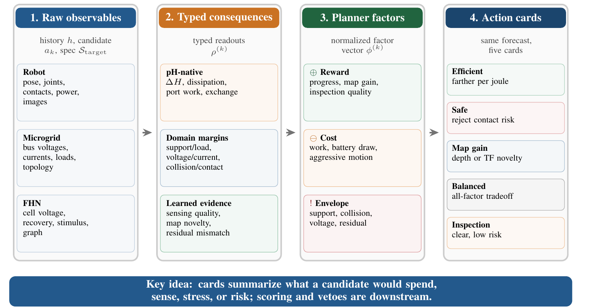
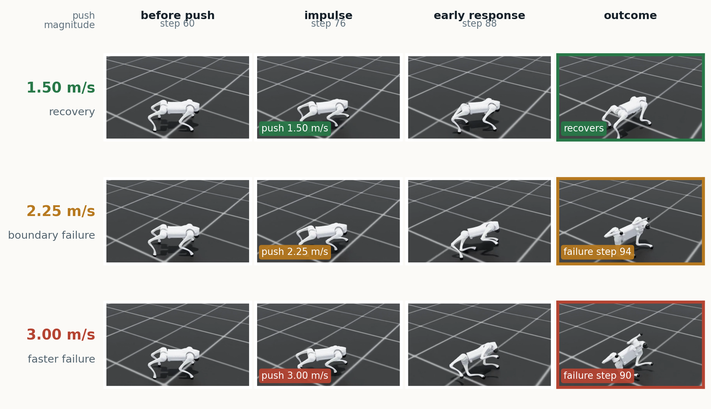

What happens if the robot chooses a different future?
C-PHAST starts from one observed state and a finite candidate set. It rolls every candidate forward and returns named consequences before an objective turns them into a ranking or veto.
Compositional world models for action-conditioned futures
The University of Texas at Austin · Mihawk.ai
C-PHAST starts from one observed state and a finite candidate set. It rolls every candidate forward and returns named consequences before an objective turns them into a ranking or veto.

The observer, dynamics, and perceptual readout heads may be learned. The factor map instead uses declared horizon aggregation and fixed training-split calibration; objectives supply weights and hard envelopes.
| Quantity | Construction and examples |
|---|---|
| pH consequenceClosed-form | Read directly from the predicted pH rollout: stored energy, dissipation, port work, and internal exchange. No separate readout head. |
| Perceptual consequenceLearned | Predicted from rollout state and deployment context: sensing quality, map novelty, and perceptual collision proxies. |
| Planner factorDeterministic | Aggregates and calibrates compatible consequences: work cost, support risk, map reward, residual warning, or hard veto. |
The pH ledger is exact for every learned parameter setting; prediction accuracy still depends on the learned state and model.


The efficient objective penalizes positive work while retaining useful motion.
The predicted consequences remain fixed; only their use changes.
Monolithic pH structure carries most of the transfer-stability gain. Shared leg-level blocks further improve accuracy and permit variable-layout reuse.

C-PHAST forecasts nine recovery commands after a held-out lateral push; one selected command is executed by the frozen locomotion policy.
Mean survival improves by 5.3 steps, with seed-clustered 95% CI [2.5, 7.1]. This establishes improved executed command selection in simulation, not autonomous Spot control.